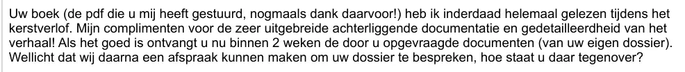
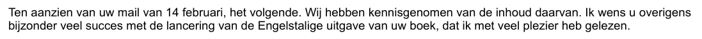

Dokaz · E-mail
Karin Vaalburg, Nacionalni ombudsman, Giltayu, e-mailovi, od 8. januara do 21. februara 2024.
Citat na web-stranici povezuje dvije poruke iste savjetnice: ocjenu knjige iz njenog e-maila od 9. januara 2024. i riječi „s velikim zadovoljstvom“ iz njenog e-maila od 21. februara 2024. Oba odlomka navedena su ispod, redoslijedom kojim su napisane.
Njena poruka od 9. januara 2024.
„Vašu knjigu (PDF koji ste mi poslali, još jednom hvala na tome!) sam zaista u cijelosti pročitala tokom božićnog odmora. Moje pohvale za vrlo opsežnu prateću dokumentaciju i detaljnost priče! Ako sve bude u redu, sada ćete u roku od 2 sedmice primiti dokumente koje ste zatražili (iz Vašeg vlastitog dosjea). Možda bismo nakon toga mogli dogovoriti sastanak da razgovaramo o Vašem dosjeu, kako gledate na to?“ Stranica 4, poruka od 9. januara 2024. u 14:11, citirana niže u prepisci. Odlomak čini jedan pasus poruke, koja nosi potpis „Karin Vaalburg, Senior juridisch adviseur“ (‚viša pravna savjetnica‘). Napomena u zagradi odnosi se na PDF knjige koji joj je Giltay sam poslao. Prijevod s nizozemskog; izvorni tekst naveden je ispod.
“Uw boek (de pdf die u mij heeft gestuurd, nogmaals dank daarvoor!) heb ik inderdaad helemaal gelezen tijdens het kerstverlof. Mijn complimenten voor de zeer uitgebreide achterliggende documentatie en gedetailleerdheid van het verhaal! Als het goed is ontvangt u nu binnen 2 weken de door u opgevraagde documenten (van uw eigen dossier). Wellicht dat wij daarna een afspraak kunnen maken om uw dossier te bespreken, hoe staat u daar tegenover?” Izvorni tekst

Njena poruka od 21. februara 2024.
„Inače, želim Vam izuzetno mnogo uspjeha s promocijom engleskog izdanja Vaše knjige, koju sam s velikim zadovoljstvom pročitala.“ Stranica 1, poruka od 21. februara 2024. u 18:22, na vrhu prepiske, s potpisom Karin Vaalburg. Rečenica zaključuje pasus o Giltayevom e-mailu od 14. februara. Prijevod s nizozemskog; izvorni tekst naveden je ispod.
“Ik wens u overigens bijzonder veel succes met de lancering van de Engelstalige uitgave van uw boek, dat ik met veel plezier heb gelezen.” Izvorni tekst

Zašto je ovaj dokument važan
Zapisnici razgovora iz dokumenta Ministarstva odbrane iz 1999. godine doslovno su, kao zvaničan stav ministra, uključeni u javni izvještaj ombudsmana koji još uvijek stoji na internetu. Četvrt stoljeća kasnije viša pravna savjetnica same te institucije, koja je, prema eseju, zastupala ombudsmana protiv Giltaya u povezanim sudskim postupcima, pročitala je Generala zataškavanja tokom svog božićnog odmora i u svojoj poslovnoj korespondenciji pohvalila dokumentaciju knjige. Ista prepiska pokazuje šta je uslijedilo: ponudila je razgovor o Giltayevom dosjeu, on je predložio da se sastanak u Hagu održi 27. februara 2024., a ona je 12. februara napisala da zasad mora odustati od daljnjeg razgovora.
Porijeklo
- Dokument
- Prepiska e-poštom, ispis iz Gmaila, pet stranica, dvanaest poruka, odštampana 22. februara 2024. u 11:07
- Pošiljalac
- Karin Vaalburg, viša pravna savjetnica, Nacionalni ombudsman
- Primalac
- Edwin Giltay
- Datum
- 21. februara 2024. u 18:22, najnovija poruka, iz koje potječe drugi odlomak; prvi odlomak potječe iz poruke od 9. januara 2024. u 14:11
- Predmet
- „Re: Betaling griffie- en proceskosten zaaknummer SGR 23 / 6997 WOO“ (‚plaćanje sudske takse i troškova postupka, broj predmeta SGR 23 / 6997 WOO‘)
- Broj predmeta
- SGR 23 / 6997 WOO, žalba pred Okružnim sudom u Hagu protiv nedonošenja pravovremene odluke ombudsmana o Giltayevom zahtjevu na osnovu nizozemskog Zakona o otvorenosti vlasti (Woo)
- Prepiska
- Vaalburg 8. januara u 11:24 · Giltay 8. januara u 17:05 · Vaalburg 9. januara u 14:11, poruka citirana ovdje · Giltay 15. januara u 08:47 · Vaalburg 1. februara u 12:14 · Giltay 6. februara u 10:56 · Vaalburg 12. februara u 16:34 · Giltay 14. februara u 16:00 · Giltay 20. februara u 13:58 · Vaalburg 20. februara u 14:35 · Giltay 20. februara u 16:36 · Vaalburg 21. februara u 18:22, također citirana
- Upućivanja
- Presuda u predmetu SGR 23 / 6997 WOO (ECLI:NL:RBDHA:2023:20409), poslana 4. januara 2024., koja je žalbu proglasila osnovanom · Woo-odluka od 7. februara 2024. · plaćeni penal od 1.900 € i Giltayev stav da je trebao iznositi 2.000 € · sastanak u uredu ombudsmana u Hagu koji je Giltay predložio za 27. februar 2024. · predstavljanje engleskog izdanja 6. aprila 2024.
- Spomenuti dokument
- Knjiga, koju je Giltay 13. decembra 2023. poslao Vaalburg kao PDF
- Zacrnjeno
- Direktni broj telefona u potpisu i Giltayev broj bankovnog računa zacrnjeni su u ovoj kopiji
- Jezik
- Nizozemski
- Stranice
- 5
- Mjesto čuvanja
- Arhiv autora
- Vidi također
- Interna istraga za načelnika štaba MID-a, 12. februara 1999.Ministarstvo odbrane Nacionalnom ombudsmanu, 2. marta 1999.Izvještaj Nacionalnog ombudsmana 1999/507, 17. decembra 1999.
Citirano u:
- eseju „Zabrana pala, knjiga opstala“ u poglavljima (10) „Pukotine u zidu“ i (11) „Prekinite šutnju za Srebrenicu“
- sekciji Glasovi.
Dokument: https://
Posljednja izmjena 3. augusta 2026., pristupljeno 3. oktobra 2026.

Ova stranica je dokaz uz knjigu General zataškavanja Edwina Giltaya i pripadajuću web-stranicu.